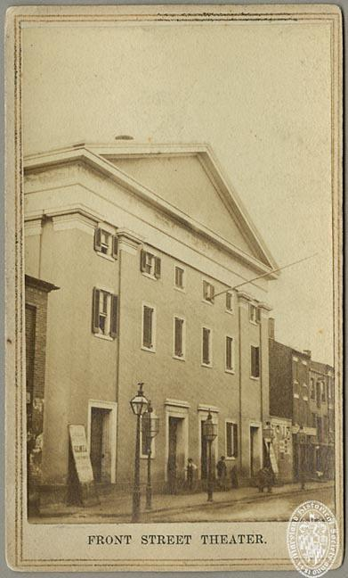

15 November 7th, 1946
Link to Forverts edition
The fire in the Yiddish theater in Baltimore in which 22 people were killed. – The comedian Tanzman who could not dance1.
In the operetta Meilitz Yosher that we were playing in Boston, the character I played was sent to prison and put in shackles, and from there I sang the song "The Moral".
2 The moral remembers for a long time
It leaves trace upon trace,
Though in every place and case,
It has a different face.
Lying imprisoned, tied down
in long, countless chains.
(?) Suddenly from the prison cell’s wall
(?) will freedom ever come once more.
And when you sees the tracks
from the chains all around,
Oh, it will lie in your memory,
the iron moral.
Yes, the moral, the moral,
Does good everywhere.
Singing alone was not enough for me, so on top of that I also - of my own accord - did a dance after as well, and I danced in the chains, and this was a big hit with the audience, and I therefore received a lot of applause at each performance. .
The audience was just simply pleased when I danced in chains…
Tanzman also played the same role; we were both offered the same role in Meilitz Yosher. And since Tanzman could not dance at all, he he did not excel as much as I did in the role, and this made him very resentful and he urged me not to dance in the role either.
– What is this dancing right in the middle of the scene? - he scolded me. - There’s no need to dance. No one is expecting you to dance!…
But I was firm and obstinate:
– It will do you no good, even if you stand on the roof3; I can dance, so I dance. If you could dance, you would certainly dance too…
We often fought over this and Abba Schoengold always had to work to make peace between us. And when the operetta Meilitz Yosher was taken down from the stage and we started playing other pieces, the business in Boston did not go so well, and then Madame Keni Liptzin4 was brought down from New York to rescue the situation. She appeared in Der Boyeri Tremp5, in Di Farblondzhete Neshome6, and Rukhl un Leah7, and that did help a little, but really only a little, not much. Soon it became bad again and we couldn’t pull through. It just wasn’t working.
In those times, Morris Winchevsky published a weekly newspaper called Der Emes8. He was the editor of the newspaper. And I remember once, when right before they raise the curtains to play some piece whose name I no longer remember, we were informed that Winchevsky himself was coming to the performance and then Abba Schoengold announced that today we should “play in such a way that there should be smoke.”
We all wanted to impress Winchevsky with our acting and because of that we really applied ourselves and tried hard. And as it seems, he was very pleased with us; The best proof of this was what he later wrote about us in Der Emes, and in this article he also wrote good things about me, that I am a talented comedian and that audience found my acting to be very strong9
What Winchevsky wrote about us really encouraged us. We were all very excited by it. But it didn’t bring large crowds to the theater. There was never any income. And when we saw that it was bad, we left Boston and went to Baltimore, and there Abba Schoengold was in charge again, not Tanzman. He appeared in Jacob Gordin’s Der Yidisher Kenig Lir and also in Der Kroynprints fun Yerusholayim10, and it went so well that it had never been better.
Schoengold was in seventh heaven, and as his manner was always, he lived in such a way that he was always spending all his money11, and in the restaurants where he ate, you knew that no matter how much food was brought to the table, it was never enough and he wanted more and more…
There was seldom a performance that the theater where we played wasn’t packed and people didn’t have to stand “head to head.” The Jewish community in Baltimore then really “ate Yiddish theater with bread”12. And based on this, we didn’t think at all about traveling to another city; We were sure that we would even play there not only for one season, but maybe for several seasons, and we already had all the plans for this and Abba Schoengold saw to it that people in New York knew about it and that all the famous actors there would spread the word so that they would once and for all have to admit that we, those who play in the provinces, are not insignificant or weak, and we could also “conquer a world.”
It was really good for us then, and we were happy that we took Baltimore “by storm.”
But during one of the performances13, suddenly somewhere around the stop-gap of the lit gas pipe, the flame let out a “crack,” and it frightened someone so much that they started shouting “fire” at the top of his voice. And then all of a sudden there erupted such a panic in the theater that it was impossible to calm down; The startled crowd was so lost that, pushing one another towards the floor and pushing each other, they didn’t look back when someone fell; In an effort to save themselves, people trampled on those who had fallen. And in the end, after the panic had barely subsided and the theater was already empty and everyone was already outside, it turned out that twenty-two people had died in the stampede…

Even to this day, I am stricken with terror when I remember that great disaster that happened in Baltimore. I can’t forget any of it! The crying, the voices and the screams are still ringing in my ears and I can now see before my eyes the terrible scene before us when we saw all the deceased. It pained the heart to look at the victims, who fell dead when they came to the theater for a little bit of enjoyment. And even though none of us was guilty of this, we still walked around feeling like killers and we were ashamed to show our faces.
In that evening, I did not play at all, but I sat at the box office/cash register. Amid the chaos, I succeeded in saving all the money that we had taken in, and I brought it to Tanzman, because he was one of the directors14. And regarding distributing the money according to the “stamps,” Tanzman brought it up without any sense of injustice or trouble, which sounded really inappropriate and I couldn’t believe it at all. And in the end^[It is worth noting that Sam’s friend [
This is a pun - Tanzman means “dance man.”↩︎
Translation by me, with (?) indicating lines I’m very unsure of.↩︎
This phrase is likely religious in origin - when the Messiah comes, he will “stand on the roof of the Temple.” Sam saying:, even if you were the messiah telling me to stop dancing, it would be to no avail.↩︎
Read her Leksikon entry here↩︎
A play written by Rudolph Marks↩︎
Recall Sam was in this play in Chapter 14↩︎
I can’t find this play. It’s rather hard to google…↩︎
means “the truth”↩︎
This article published December 6th 1895 in the Boston paper Der Emes announces that Keni Liptzin is playing in Boston, in particular playing in Di Farblondzhete Neshome. Sam, among other troupe members, are also mentioned in the article. This may be the article that Sam is referring to, but I have not translated it. Regardless, this article tells us these events are taking place in late 1895.↩︎
Written by Joseph Lateiner↩︎
Sam writes something that doesn’t quite translate: money was “bankrupting” between his fingers↩︎
an idiom that I think means really consumed it regularly/daily↩︎
On Friday December 26th 1895, this was a performance of the historical operetta Aleksander, oder der Kroynprints fun Yerusholayim↩︎
This full-page exposé published in the Baltimore sun includes a brief statement from Sam (“Samuel Castine”; boxed in far-right column under header “Friday night’s receipts”) indicating that the box office cash went missing but was recovered later.↩︎
{kind=link}